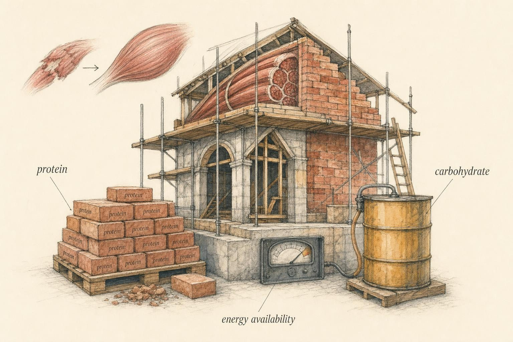
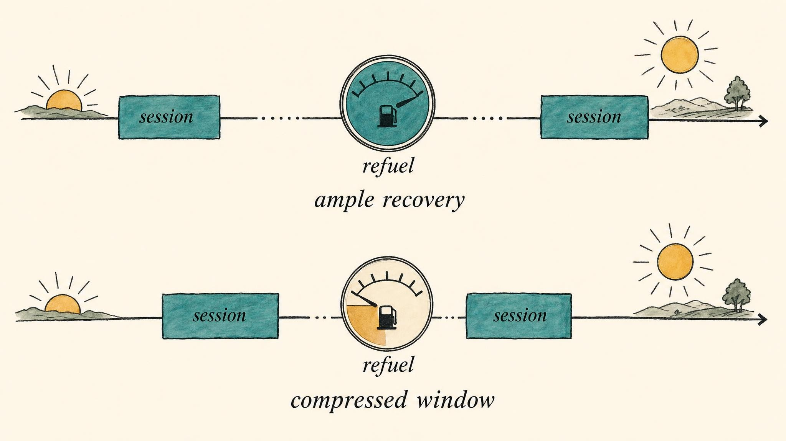

Fuel for the Rebuild
Nutrition as raw material and energy for adaptation, and why timing is mostly a rounding error.
A training stimulus is a demolition order. The bout you just finished disrupted proteins, drained fuel stores, and left behind a signal that reads, in effect, build back stronger. But a demolition order is not a building. To rebuild, and to rebuild better than before, the body needs two things it cannot conjure from nothing: raw materials for the new structure and energy to run the crew. That is what nutrition contributes to recovery. Not motivation, not magic, not a supplement stack. Bricks and electricity.
This chapter looks at food strictly through the recovery lens built in Chapter 1: adaptation is construction, and construction has a materials budget. We will not drift into general diet advice, and we will not touch dosing of supplements or drugs. The question in front of us is narrower and more useful: what does the body need to actually complete the rebuild the training session ordered?
Throughout this chapter you will follow one learner, Marisol, a 34-year-old logistics coordinator who signed up for this course two months into training for her first half marathon while still holding onto the three weekly strength sessions she had built over the previous year. She runs before work three mornings a week, lifts on two evenings that sometimes land only a few hours after a run, and has started weighing her lunch on a kitchen scale because a podcast convinced her that "getting lean for race day" would make her faster. She is not a patient in this course and she is not a case to be solved. She is a stand-in for an extremely common situation: a person juggling two training demands, an inconsistent schedule, and a growing pile of nutrition advice that contradicts itself. Her story is a thread we will pick up at intervals, not a diagnosis, and we will be careful about that difference the whole way through.
Why spend a whole chapter on something as ordinary as eating? Because the cost of getting it wrong is invisible until it compounds. A single missed post-workout snack changes nothing measurable. A single humid long run without a fluid plan changes nothing measurable. But stack a chronically inadequate protein total, a fuel tank that never quite refills, a body running a slight and unnoticed fluid deficit most days, and a calorie intake trimmed just enough to undercut a rising training load, and months later a learner is standing in front of you asking why their progress stalled, why they are more tired than the training alone should explain, or why an injury showed up out of nowhere. Nutrition rarely fails loudly. It fails by a slow erosion of the margin the body needs to do its job, which is exactly why a framework, rather than a checklist of individual facts, is worth building carefully.
The construction metaphor, taken seriously
Recall the core model. A stressor produces disruption; recovery restores and then overcompensates; the result is a slightly upgraded system. Nutrition sits squarely inside the recovery phase. If the stimulus is the blueprint, then protein supplies the structural material for the new tissue and carbohydrate restores the fuel spent doing the work. Sitting underneath both is a more fundamental question: does the body have enough energy availability to fund any construction project at all, and does it have the fluid and electrolyte balance to run the machinery that does the building?
Keep these jobs distinct in your mind, because they answer different questions. Protein answers "what is the building made of?" Carbohydrate answers "is the tank full for the next session?" Hydration answers "is the worksite running at the temperature and pressure it needs to get anything done?" Energy availability answers "is the whole enterprise solvent, or is it operating at a deficit that forces the body to cut corners?" Conflating these questions is the source of most bad nutrition advice aimed at people who train.
Marisol's situation is a useful preview of why the distinction matters. By her own account she has "good protein" and "good carbs" mostly figured out. What she has not figured out is how those two facts interact with a shrinking calorie target, a running habit that pulls fluid out of her faster than she replaces it, and a training week that sometimes asks her body to do two hard things eight hours apart. Every one of those complications gets a name and a framework in this chapter.

Adaptation as construction: materials, fuel, and a solvent budget." data-image-idx="0" style="display:block;max-width:100%;max-height:75vh;height:auto;width:auto;margin:0 auto;cursor:pointer;">Protein: the building blocks of repair and remodeling
Exercise, particularly resistance exercise, elevates the rate of muscle protein synthesis (MPS), the process by which the body swaps out damaged proteins and lays down new, better-adapted ones, for hours after the bout. Van Vliet and colleagues (2018) describe how this elevated synthetic response, which can persist for 24 hours or more after an unaccustomed bout, is amplified when dietary protein is available to supply amino acids as substrate. Training turns the machinery on. Protein feeds it.
It is worth being precise about what is being remodeled, because "muscle repair" is a coarse phrase that hides more than it reveals. Van Vliet et al. (2018) distinguish the myofibrillar fraction (the contractile proteins usually meant by the word "muscle"), the sarcoplasmic fraction (enzymatic and metabolic proteins), and the collagen and extracellular matrix (ECM) fraction that gives tissue its structural scaffolding. These fractions turn over on different schedules and respond differently to loading and feeding. Recovery, in other words, is not one process but several overlapping renovations happening in the same building at once, on different timelines, with different material requirements.
How much, and does the source matter?
According to Jäger and colleagues (2017), whose International Society of Sports Nutrition (ISSN) position stand anchors this whole section, a total daily protein intake in the range of 1.4 to 2.0 grams per kilogram of body weight per day (g/kg/day) is sufficient for most exercising individuals to support muscle protein balance and adaptation. Notice the emphasis on total daily. This is the big rock. Per-meal dose, on the order of roughly 0.25 g/kg, or an absolute range of about 20 to 40 grams, to maximally stimulate MPS at a given sitting, and distribution across the day in servings spaced roughly every three to four hours, are real but secondary levers. Tune them only after the daily total is already being met.
On source: the popular assumption that adaptation demands isolated powders is not supported by the evidence. Van Vliet et al. (2018) make the case that whole foods, with their fuller amino acid profiles and accompanying nutrients, support post-exercise remodeling at least as well as isolated protein, and plausibly better in some respects, since a whole food matrix arrives with the fats, fiber, vitamins, and minerals that a powder does not. The practical translation: hitting the daily target with ordinary food, chicken, eggs, yogurt, lentils, fish, is a legitimate, evidence-consistent strategy, not a compromise reserved for people who cannot afford supplements.
The reason distribution across the day appears in the ISSN recommendations at all, rather than being folded entirely into the total, comes down to a concept called the leucine threshold. Leucine is a single amino acid that appears to act as a trigger, switching on the cellular machinery that starts protein synthesis once a serving crosses a minimum amount, generally cited in a range of 700 to 3,000 milligrams per dose, or roughly what a 20 to 40 gram serving of a leucine-rich protein source supplies. A day's worth of protein consumed entirely in one enormous meal will not trigger this switch nearly as many times as the same total spread across three or four servings, which is the mechanistic reason "spread it out reasonably" outperforms "eat it all at once," even though both approaches can hit the identical daily gram target. This is a genuine, if secondary, timing effect, and it is worth distinguishing from the anabolic-window myth this chapter spends real time debunking later on: distributing protein across a day is not the same claim as insisting on a narrow post-workout minute count, and conflating the two is part of how the myth persists.
Marisol's protein intake, once she actually logged it for a full week instead of estimating, turned out to sit around 1.6 g/kg/day, comfortably inside the ISSN range, spread across four meals that already landed close to the every-three-to-four-hour pattern the position stand describes. Her mistake was not a protein mistake. It was assuming that because her protein number looked fine, everything else in her plan was automatically fine too, an assumption we will revisit once energy availability enters the picture.
Carbohydrate: refilling the tank you emptied
If protein is the building material, carbohydrate is the fuel account. Muscle and liver store carbohydrate as glycogen, a branched chain of glucose molecules held in reserve for exactly this purpose, and prolonged or repeated high-intensity exercise draws that reserve down. Glycogen depletion is a well-established fatigue mechanism: when the tank runs low, output falls, pace slows, and a session that felt manageable an hour earlier starts to feel like wading through sand (Craven et al., 2021). Restoring glycogen is therefore a genuine recovery task, distinct from tissue repair, and its urgency depends almost entirely on when the next session needs the fuel.
The meta-analytic picture on how to refuel is clear. Craven and colleagues (2021), pooling controlled studies in a systematic review and meta-analysis, found that carbohydrate provision significantly accelerates the rate of muscle glycogen resynthesis compared with no nutritional intake, an unsurprising result that nonetheless establishes the direction and size of the effect. More interesting is their second finding: co-ingesting protein with carbohydrate did not meaningfully enhance glycogen resynthesis compared with carbohydrate alone, once the two conditions were matched for total calories. In other words, the glycogen benefit sometimes credited to added protein looks, in the pooled data, like an artifact of the extra energy that protein brings along with it. Match the calories, and the added protein contributes little to the glycogen rate specifically.
It is worth flagging a genuine complication here, because pretending the science is tidier than it is would be its own kind of dishonesty. A handful of individual, tightly calorie-matched trials still detect a small edge for added protein, and the mechanism, possibly involving insulin response or differences in how quickly the stomach empties, remains debated. This is a footnote, not a rebuttal. It does not change the headline finding, and it is a fair example of how a meta-analysis can summarize a consistent average effect while individual studies still scatter around it. Do not let a small, contested, secondary effect crowd out the large, settled, primary one: carbohydrate is what refills the tank.
It helps to have a rough sense of scale here. A typical trained adult stores somewhere in the neighborhood of 400 to 500 grams of carbohydrate as muscle glycogen, distributed across the muscles that were actually used, plus a smaller liver store of roughly 80 to 100 grams that exists mainly to buffer blood glucose between meals rather than to fuel the muscles directly. A hard, prolonged session can draw muscle glycogen down substantially, and because the depletion is localized to the muscles doing the work, a runner's leg glycogen and a swimmer's shoulder glycogen empty at different rates even during a session that feels equally hard by perceived effort. This localized depletion is also why "carbohydrate" as a recovery target is really shorthand for restoring the specific stores that specific muscles just spent, not a single undifferentiated tank, even though treating it as one tank is a perfectly good simplification for everyday planning.
When glycogen timing genuinely matters
Here is the crucial context switch. Train once a day and eat adequately, and glycogen will be fully restored well before the next session. There is roughly 24 hours available, and total daily carbohydrate intake does the job with room to spare. The rate of resynthesis is almost irrelevant on that timescale. But compress the recovery window and the calculus changes. When two hard sessions fall within about eight hours of each other, the morning-and-evening reality of tournament play, two-a-day training blocks, or a runner who lifts a few hours after a hard run, there is not enough time for leisurely restoration, and aggressive early carbohydrate feeding becomes performance-relevant (Kerksick et al., 2017). Timing matters precisely where the clock is the binding constraint, and essentially nowhere else.
This is Marisol's actual situation on the two days a week when a morning run and an evening lift fall inside that eight-hour window. On those days, waiting until dinner to think about carbohydrate is a real mistake, not a theoretical one, because her lift will start before a leisurely refeed has had time to work. On every other day of her week, when 24 hours separate her sessions, the same "wait until dinner" habit costs her almost nothing. Same person, same habit, two completely different consequences, because the constraint that matters is the clock, not the food.

Glycogen timing is a rounding error across a full day, and decisive across eight hours." data-image-idx="1" style="display:block;max-width:100%;max-height:75vh;height:auto;width:auto;margin:0 auto;cursor:pointer;">Nutrient timing, put in its proper place
Now to the chapter's central move. Popular training culture is obsessed with the anabolic window, the notion that a narrow post-workout period, often quoted as thirty to sixty minutes, is when protein "counts" and outside of which the meal is wasted. It is a vivid idea. It is also, as a general rule, wrong.
The landmark critical review here is Aragon and Schoenfeld (2013), who examined the anabolic-window concept and found its importance, and in some framings its very existence, to be far less certain than folklore holds. Their key qualifier is pre-exercise feeding: eat a normal protein-containing meal in the hours before training, and amino acids are still elevated during and after the session, so there is no gaping window slamming shut the moment the bar goes back on the rack. The "window," they argue, is better understood as a wide and forgiving span governed by when a person last ate and when they will eat next, not a cliff edge.
The meta-analysis that settled the practical question is Schoenfeld, Aragon, and Krieger (2013). Pooling 23 hypertrophy studies and 20 strength studies, they found an apparent benefit of protein timing, until they statistically controlled for total daily protein intake. Once total intake was accounted for, the independent effect of timing on hypertrophy was not statistically significant. The timing "effect" visible in the raw data was largely timing studies inadvertently giving the timed groups more total protein. Control the big rock, and the small rock stops moving the needle.
According to the ISSN nutrient-timing position stand (Kerksick et al., 2017), the most recent comprehensive synthesis on the question, total daily protein is a higher priority than specific timing, the effect of timing on body composition is, in the authors' words, "at best minimal" for someone training once daily with adequate overall nutrition, and carbohydrate timing rises to genuine importance mainly when the recovery window between sessions is short. This is not a fringe reading of the evidence. It is the position statement of the field's professional society.
After controlling for covariates including total protein intake, the independent effect of protein timing on muscle hypertrophy was rendered non-significant.
Paraphrasing Schoenfeld et al. (2013)
Big rocks before small rocks
You have met this shape before. In Chapter 2 the argument was that sleep's dominant lever is total sufficiency, and that fussing over sleep-hygiene micro-optimizations while chronically under-sleeping pours effort into a small rock while the big rock sits unplaced. Nutrition rehearses the identical hierarchy. Fill the container in the right order: energy availability and total daily protein and carbohydrate first, the big rocks that determine most of the outcome, and only then, if the situation calls for it, tune the small rock of timing. Placed first, the big rocks dominate. Placed last, timing can only fill the gaps between them.
This is also a first rehearsal of the honest-grading mindset that Chapter 6 will apply to recovery modalities. The intellectually honest question about any intervention is not "does it do anything?" but "how much does it move the outcome, relative to the things already being ignored?" Timing does something. It just does far less than a culture selling pre- and post-workout products would like people to believe, and almost nothing once the daily totals are handled.
It is worth being explicit about what falls outside this chapter's scope here, since the boundary matters. Creatine, caffeine, and other performance supplements sit in a different category entirely, dosing decisions rather than the food-and-fluid framework this chapter builds, and this course does not address supplement dosing at all. The point of the nutrient-timing discussion is narrower and more durable than any single product recommendation: it is a template for how to weigh a popular claim against its actual evidence base, a template that will resurface in Chapter 6 when the subject shifts to ice baths, compression gear, and other recovery modalities that make similarly outsized promises relative to their measured effect.
Hydration: the fluid budget nobody puts on a macro tracker
Water rarely gets billed as a recovery nutrient, which is strange given how much of the recovery machinery depends on it. Roughly half to sixty percent of total body mass is water, and that water is not a passive filler. It is the medium blood plasma moves through to deliver amino acids and glucose to working tissue, the solvent in which the enzymatic reactions behind protein synthesis and glycogen resynthesis actually take place, and the coolant that keeps core temperature inside a range where those reactions can run at all. Treat hydration as an afterthought, and the other two budgets in this chapter, protein and carbohydrate, become harder to spend well, no matter how carefully the grams are counted.
Sweat rate is where most of the confusion starts, because it varies enormously between individuals and even between sessions for the same person. Depending on heat, humidity, clothing, and exercise intensity, sweat losses can range from under half a liter per hour to well over two liters per hour. According to Casa and colleagues (2019), whose review focuses on the fluid needs of track and field athletes but generalizes well to anyone training hard, losing more than about two percent of body mass through sweat during exercise is associated with measurable declines in endurance performance and added strain on the cardiovascular system, since the heart has to work harder to circulate a smaller volume of blood. A 68-kilogram runner, for context, crosses that two percent threshold after losing roughly 1.4 kilograms of sweat, which for a moderate sweater on a warm day can happen well inside a single long run.
None of this means every session demands a hydration calculator. For most training, most of the time, drinking according to thirst is an adequate strategy, and the research on forced, scheduled overdrinking has its own downside: taking in far more fluid than sweat losses require, especially plain water without any sodium, can dilute blood sodium concentration and produce a genuine medical emergency called exercise-associated hyponatremia. This is rare, but it is not theoretical, and it is a useful reminder that "more hydration is always better" is exactly the kind of oversimplification this course keeps warning against. The goal is matching intake to loss, not maximizing intake.
The most useful practical tool here is embarrassingly simple: a bathroom scale. Weighing before and after a representative training session, ideally one that resembles the sessions a person actually cares about, in similar heat and at a similar intensity, turns an abstract sweat rate into a concrete number. A pound lost during a session is, for most purposes, close enough to a pint of fluid lost, and repeating this a few times across different conditions gives a far more individualized picture than any generic recommendation could. This single measurement also explains why blanket advice like "drink a gallon a day" fails so many people: a small, low-sweat individual training in a cool gym and a large, heavy-sweating individual training outdoors in summer heat can have sweat rates that differ by a factor of four or more, and a fixed daily number cannot serve both of them well.
Where a plan does earn its keep is around long or hot sessions and the days that follow them. Sweat carries sodium as well as water, and the loss varies by individual almost as much as the sweat rate itself does, which is why a single "drink an electrolyte tablet every session" rule fits some people and badly overshoots or undershoots others. After a session with meaningful fluid loss, replacing roughly the deficit, plus a margin to cover the fact that some of what is drunk will be lost again to urine before the body reaches equilibrium, restores hydration status faster than sipping the same volume slowly across the following day. That is a genuine, evidence-grounded timing effect, distinct from the mostly mythical anabolic window discussed earlier in this chapter, because unlike glycogen or protein, fluid balance is corrected on the order of hours, not a full day, and a session that starts already behind on fluid starts at a real disadvantage.
Marisol's cramping on her longest training run turned out to trace back here rather than to anything more exotic. She trains at 6 a.m. in a humid climate, sweats heavily by her own description, and had been replacing fluid only when she remembered to, which on a run longer than ninety minutes meant not nearly enough. Weighing herself before and after a representative long run showed a body mass loss of a bit over two percent, squarely inside the range Casa and colleagues associate with a real performance cost. The fix was not exotic either: a bottle carried on the longer runs, plain water for anything under an hour, something with sodium for anything longer or sweatier, and a habit of checking urine color as a rough, practical proxy for hydration status rather than trying to weigh in before every single run.
Energy availability: the gate before everything
Every budget discussed so far, protein, carbohydrate, even hydration, assumes the body is solvent, that it has enough total energy to fund construction in the first place. That assumption deserves its own scrutiny, because when it fails, everything downstream fails with it. Energy availability (EA) is dietary energy intake minus exercise energy expenditure, normalized to fat-free mass, conceptually the energy left over to run all the physiological processes that are not the workout itself. When that remainder is chronically too low, the body triages. It cannot fund a renovation it cannot pay for.
The current authoritative framework is the 2023 consensus statement from the International Olympic Committee (IOC) on Relative Energy Deficiency in Sport (REDs) (Mountjoy et al., 2023). It describes how sustained low energy availability (LEA) impairs a broad spectrum of functions, metabolic rate, protein synthesis, bone health, immune function, cardiovascular and endocrine systems among them. Notice that protein synthesis appears on that list. This is the recovery link made explicit: hit a protein target on paper, and if overall energy is deeply insufficient, the body downregulates the very synthetic machinery those amino acids were meant to feed. LEA is a recovery gate, a condition that determines whether adaptation can proceed at all, sitting logically upstream of protein dose, upstream of carbohydrate timing, and light years upstream of nutrient timing generally.
The 2023 statement also updates the conceptual model, framing LEA on a spectrum from adaptable to problematic rather than as a simple on-or-off state (Mountjoy et al., 2023). A brief, modest, intentional energy deficit, a controlled cut with a defined endpoint, is not the same as a prolonged, severe, unrecognized deprivation with no endpoint at all. This spectrum thinking is exactly the frame Chapter 8 will need, when stress and recovery debt accumulate along a similar continuum from tolerable load to genuine dysfunction. LEA is one of the clearest cases where a recovery input, pushed too far for too long, becomes a recovery-limiting stressor in its own right.
It also matters that REDs was originally described in female athletes and has since been recognized as relevant across sexes and a wide range of training backgrounds, from elite competitors to recreational learners juggling a training habit against a demanding job. The presenting picture varies with the individual: some people notice performance plateaus first, some notice frequent minor illnesses as immune function slips, some notice bone stress injuries that seem to appear out of nowhere in someone with no obvious impact-loading problem, and some notice changes to reproductive hormone signaling. None of these signs, taken alone, proves low energy availability is present, and none of them is something this course is equipped to interpret for a specific person. What the framework offers is a reason to ask the question rather than to assume that any one symptom has a single, obvious cause.
This is precisely the tension building in Marisol's plan. "Getting lean for race day" is not, on its own, an unreasonable goal, and a modest, time-limited deficit sits well within the adaptable end of the spectrum Mountjoy and colleagues describe. But she had stacked that deficit on top of a training volume that had also just increased, without adjusting her intake to account for the added running, which meant her actual energy availability was lower than she realized, not because she was trying to run a large deficit, but because she was underestimating the expenditure side of the equation while holding the intake side steady.
Putting the pieces in order
Assemble the hierarchy and it reads as a single, coherent priority list. First, be solvent: maintain sufficient energy availability so the body is in a position to adapt at all. Second, hit the totals: enough daily protein, roughly 1.4 to 2.0 g/kg/day, to supply building blocks, enough daily carbohydrate to refill the fuel spent, and enough fluid and sodium across the day to keep the whole system running at the right pressure. Third, and only third, tune timing where the context demands it: distribute protein reasonably across the day, refuel carbohydrate aggressively when a second hard session is coming within about eight hours, and prioritize fluid replacement quickly after a session with meaningful sweat loss.
Everything in this order is proportioned to how much it moves the outcome. The big rocks, energy and the daily totals, account for most of the variance in recovery quality. Timing is real but marginal, decisive only in the compressed-window edge cases where the clock, not the total, is the binding constraint. Grade it honestly, and attention gets spent where it actually buys adaptation, rather than where a marketing narrative says it should.
Case study: Marisol and the compressed week
Run Marisol's week through the framework built across this chapter and the confusion resolves into a short, specific list, not a diagnosis, which is not this chapter's job to give, but a set of honest questions the podcasts and forums had skipped. Start with protein: her logged intake sits around 1.6 g/kg/day, inside the range Jäger and colleagues (2017) describe as sufficient for most exercising individuals. Protein was never her weak point, and no amount of further optimizing meal timing around it would have moved the needle much, a conclusion Schoenfeld et al. (2013) would predict directly.
Move to the two compressed-window days. Here the carbohydrate timing guidance in Kerksick et al. (2017) genuinely applies: an eight-hour gap between a hard run and a lift is exactly the scenario where waiting until dinner to refuel is a real cost, not a rounding error. A modest, deliberate carbohydrate snack between sessions, rather than nothing, is the one piece of timing advice in this whole chapter that earns its place in her specific week, precisely because her schedule creates the narrow window the evidence says matters.
Her cramping traces to hydration, not electrolytes in some exotic sense but simple underreplacement on a humid, 6 a.m. long run, confirmed by a body mass loss over the two percent threshold that Casa and colleagues (2019) associate with measurable performance decline. A carried bottle and a sodium-containing drink on her longer runs addresses this directly, and it is worth noting how ordinary the fix is once the mechanism is named.
The piece that actually deserves the most attention is the one she had least considered: energy availability. Trimming lunch portions while simultaneously increasing running volume compounds in a way that is easy to miss from the inside, because neither change looks dramatic on its own. Nothing in this chapter can tell Marisol whether her current intake constitutes a modest, adaptable deficit or something closer to the problematic end of the spectrum Mountjoy and colleagues (2023) describe, and that is exactly the kind of question that belongs with a sports dietitian or physician who can track her actual intake, training load, and any emerging signs over time, rather than with a self-audit against a chapter in a course. What this chapter can do, and has done, is hand her an accurate map of which of her habits are big rocks and which are small ones, so that if she does seek that evaluation, she arrives with better questions than "am I doing this right," and a clearer sense of what "right" would even mean.
There is a broader lesson in how Marisol's individual pieces interact, and it is worth stating plainly because it is easy to miss when each budget is discussed in its own section. None of her four issues, protein, compressed-window carbohydrate, hydration, energy availability, was severe on its own. Her protein was fine. Her carbohydrate mattered only on two days a week. Her fluid deficit was real but correctable with a bottle and a plan. Her energy availability was trending in a concerning direction but had not crossed into anything alarming. Stacked together, though, these small shortfalls interact: a body running a mild energy deficit recovers glycogen more slowly, is more prone to underestimating its own fluid needs because appetite and thirst signaling both blunt somewhat under sustained underfueling, and has less spare capacity to compensate for a compressed training window. The lesson is not that any single number in her plan was catastrophic. It is that recovery nutrition is a system of interacting budgets, and a small deficit in one account makes every other account harder to balance.
Key Takeaways
- Protein supplies the building blocks for post-exercise remodeling across distinct tissue fractions (myofibrillar, sarcoplasmic, collagen and extracellular matrix); roughly 1.4 to 2.0 g/kg/day of total intake is the dominant lever, and whole foods are fully adequate (Jäger et al., 2017; Van Vliet et al., 2018).
- Carbohydrate restores spent glycogen; provision clearly accelerates resynthesis, while adding protein contributes little once calories are matched (Craven et al., 2021).
- The anabolic window is far wider and more forgiving than folklore claims; after controlling for total daily protein, the independent effect of timing on hypertrophy is not significant (Aragon and Schoenfeld, 2013; Schoenfeld et al., 2013).
- Timing becomes genuinely important mainly when sessions are separated by eight hours or fewer, the compressed-window edge case (Kerksick et al., 2017).
- Hydration status, not precise sip timing, is what matters; thirst-guided drinking covers most situations, and losses beyond about two percent of body mass carry a real performance cost worth actively managing (Casa et al., 2019).
- Low energy availability gates recovery: sustained deficiency impairs protein synthesis and much else, sitting upstream of every other nutritional lever (Mountjoy et al., 2023).
- Big rocks before small rocks: energy, protein and carbohydrate totals, and hydration status come first; timing sits at the margins, the same hierarchy as sleep in Chapter 2 and the honest grading of Chapter 6.
Materials, fuel, and the fluid and energy budgets that make use of them are now on the table. Chapter 4 turns to a related myth with the same shape as the anabolic window: the belief that muscle soreness is a reliable gauge of a good session, and what soreness can and cannot actually tell a person about the rebuild underway.
References
Aragon, A. A., & Schoenfeld, B. J. (2013). Nutrient timing revisited: Is there a post-exercise anabolic window? Journal of the International Society of Sports Nutrition, 10(1), 5. https://doi.org/10.1186/1550-2783-10-5
Casa, D. J., Cheuvront, S. N., Galloway, S. D., & Shirreffs, S. M. (2019). Fluid needs for training, competition, and recovery in track-and-field athletes. International Journal of Sport Nutrition and Exercise Metabolism, 29(2), 175-180. https://doi.org/10.1123/ijsnem.2018-0374
Craven, J., Desbrow, B., Sabapathy, S., Bellinger, P., McCartney, D., & Irwin, C. (2021). The effect of consuming carbohydrate with and without protein on the rate of muscle glycogen re-synthesis during short-term post-exercise recovery: A systematic review and meta-analysis. Sports Medicine - Open, 7(1), 9. https://doi.org/10.1186/s40798-020-00297-0
Jäger, R., Kerksick, C. M., Campbell, B. I., Cribb, P. J., Wells, S. D., Skwiat, T. M., Purpura, M., Ziegenfuss, T. N., Ferrando, A. A., Arent, S. M., Smith-Ryan, A. E., Stout, J. R., Arciero, P. J., Ormsbee, M. J., Taylor, L. W., Wilborn, C. D., Kalman, D. S., Kreider, R. B., Willoughby, D. S., & Antonio, J. (2017). International Society of Sports Nutrition position stand: Protein and exercise. Journal of the International Society of Sports Nutrition, 14, 20. https://doi.org/10.1186/s12970-017-0177-8
Kerksick, C. M., Arent, S., Schoenfeld, B. J., Stout, J. R., Campbell, B., Wilborn, C. D., Taylor, L., Kalman, D., Smith-Ryan, A. E., Kreider, R. B., Willoughby, D., Arciero, P. J., VanDusseldorp, T. A., Ormsbee, M. J., Wildman, R., Greenwood, M., Ziegenfuss, T. N., Aragon, A. A., & Antonio, J. (2017). International Society of Sports Nutrition position stand: Nutrient timing. Journal of the International Society of Sports Nutrition, 14, 33. https://doi.org/10.1186/s12970-017-0189-4
Mountjoy, M., Ackerman, K. E., Bailey, D. M., Burke, L. M., Constantini, N., Hackney, A. C., Heikura, I. A., Melin, A., Pensgaard, A. M., Stellingwerff, T., Sundgot-Borgen, J. K., Torstveit, M. K., Jacobsen, A. U., Verhagen, E., Budgett, R., Engebretsen, L., & Erdener, U. (2023). 2023 International Olympic Committee's (IOC) consensus statement on relative energy deficiency in sport (REDs). British Journal of Sports Medicine, 57(17), 1073-1097. https://doi.org/10.1136/bjsports-2023-106994
Schoenfeld, B. J., Aragon, A. A., & Krieger, J. W. (2013). The effect of protein timing on muscle strength and hypertrophy: A meta-analysis. Journal of the International Society of Sports Nutrition, 10(1), 53. https://doi.org/10.1186/1550-2783-10-53
Van Vliet, S., Beals, J. W., Martinez, I. G., Skinner, S. K., & Burd, N. A. (2018). Achieving optimal post-exercise muscle protein remodeling in physically active adults through whole food consumption. Nutrients, 10(2), 224. https://doi.org/10.3390/nu10020224